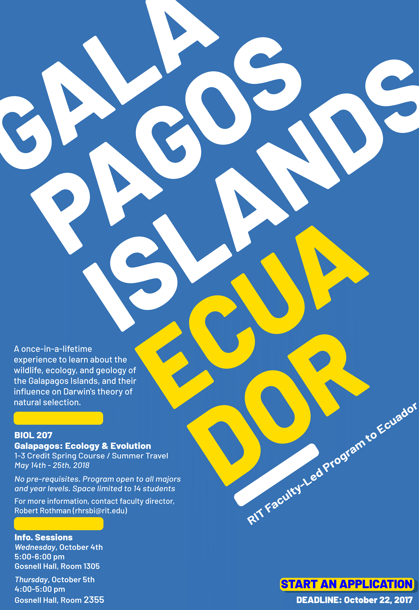
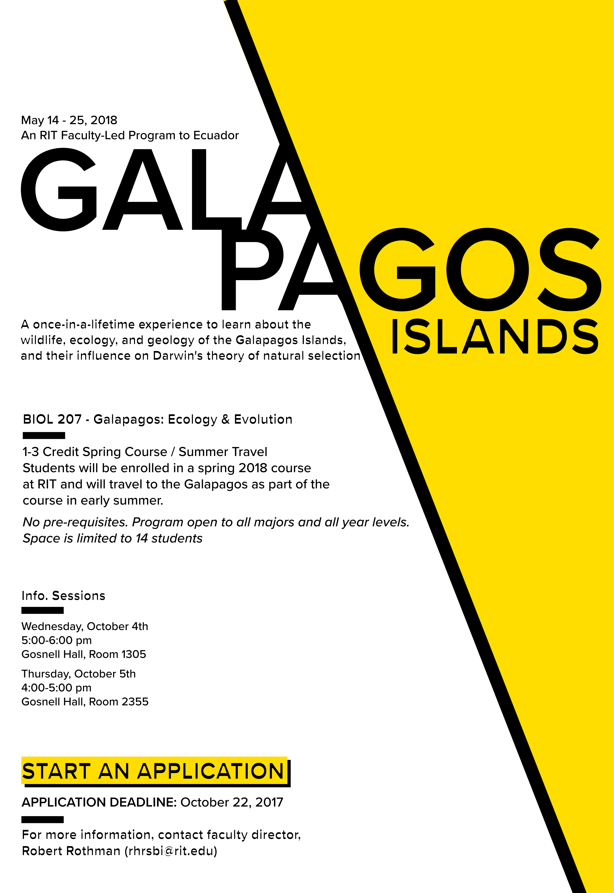
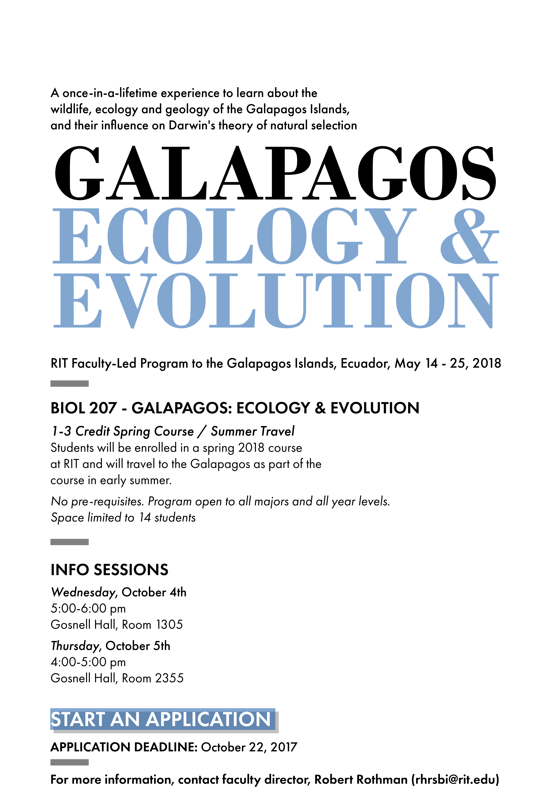

A redesign of an email flyer sent to the RIT student body promoting a Galapagos-related event. Created in Adobe Illustrator for New Media Design Elements in the fall of 2018. The exercise focused on hierarchy and typography—condensing the original content without adding new information.
Created multiple iterations to explore typographic hierarchy: the first three versions use a single font to push contrast through size, weight, and spacing. The final version introduces a second font to further differentiate headings from body copy. Each iteration improves scannability and emphasizes the most important information.


